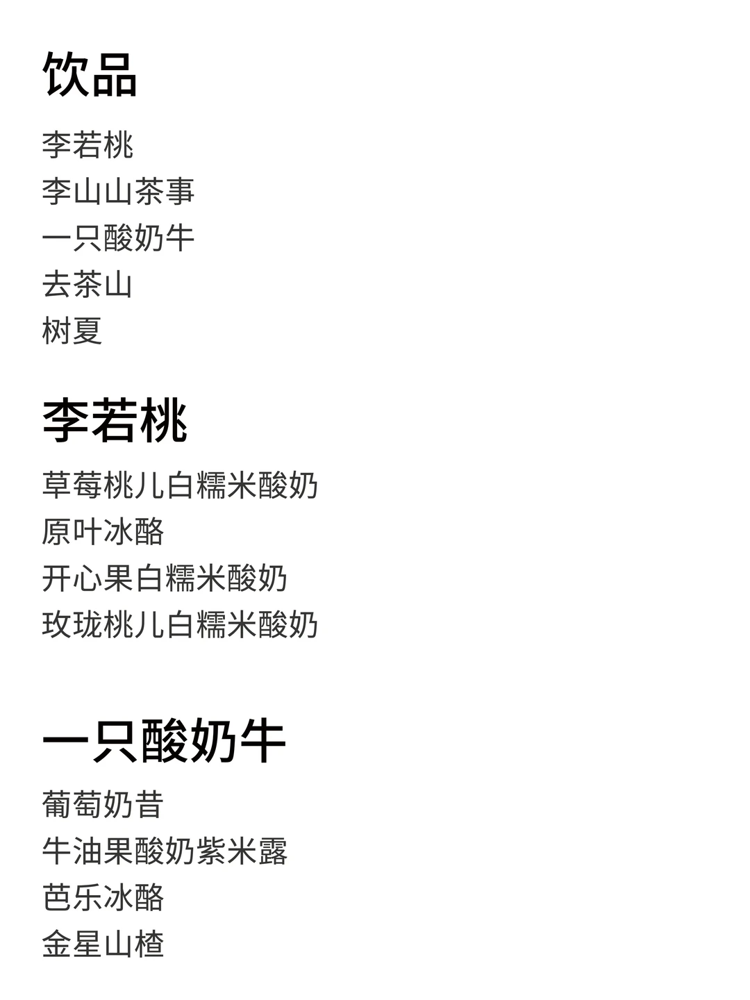
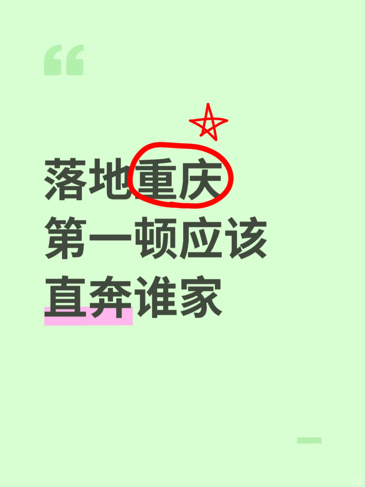
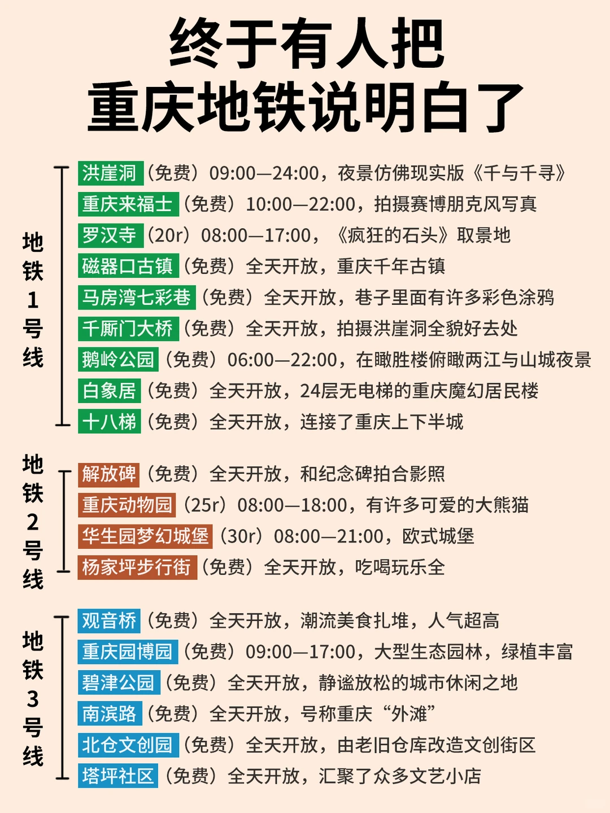
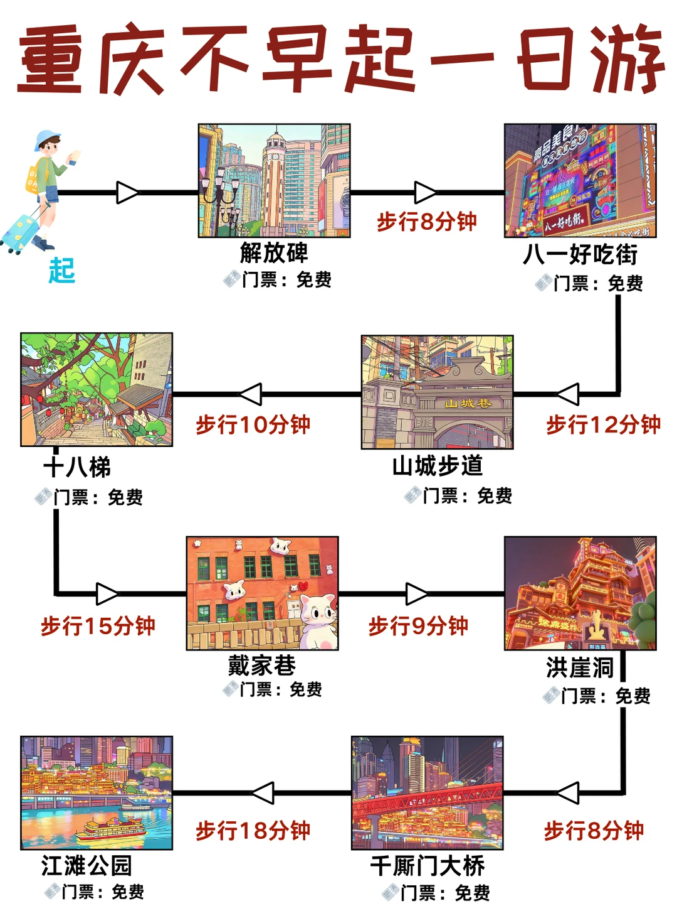
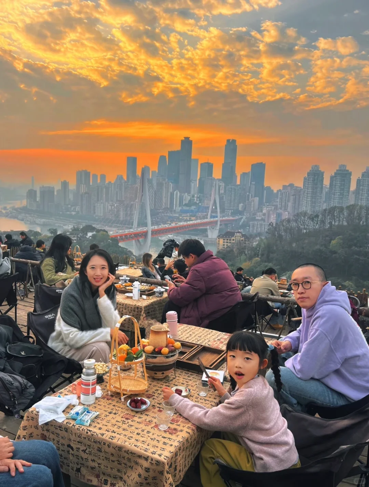
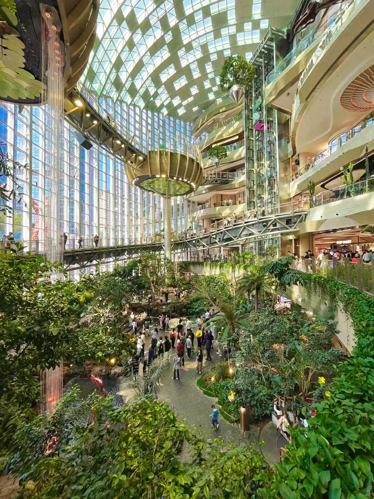
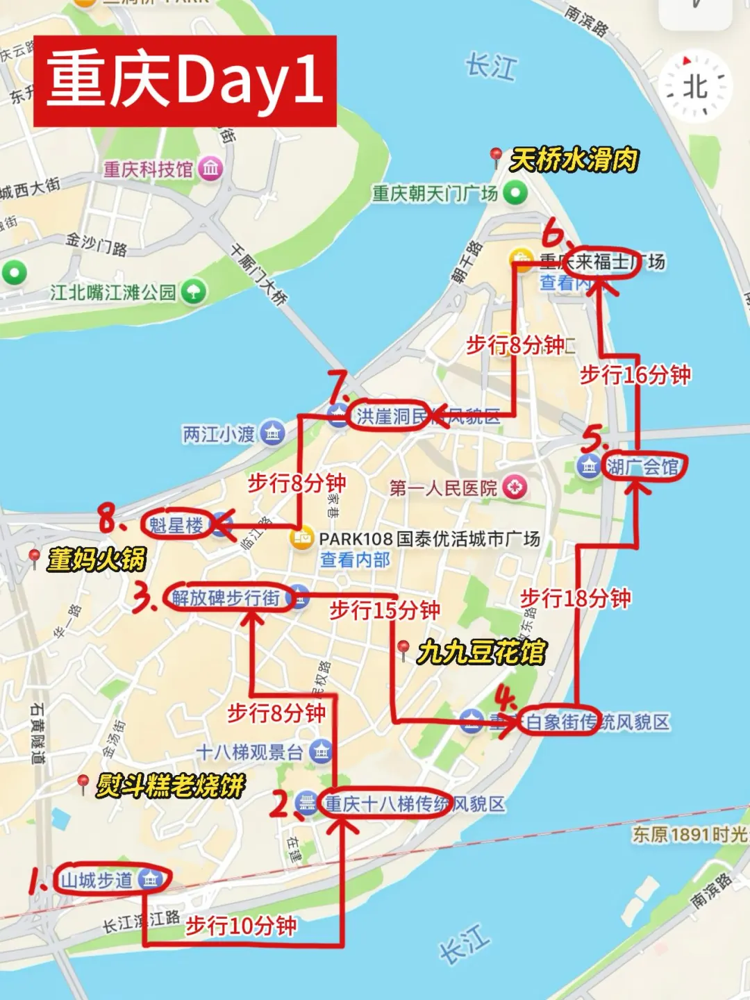

线路
解放碑周边山城步道、十八梯、洪崖洞夜景串成高低步行线。
Chongqing 3-Day Guide
第 2 天固定武隆一日游，第 1/3 天安排主城不绕路线路。主城两天不追求全打卡，核心是渝中半岛、南岸老街和一段轻轨体验。
解放碑周边山城步道、十八梯、洪崖洞夜景串成高低步行线。
主城轨道交通+步行，坡多时网约车补短板；去南山建议打车。
火锅 1-2 顿即可，搭配小面、油茶、糯米团、凉糕/凉虾。
把主城两天和武隆一日游拆成 3 条可视化路线，点位、交通、顺路吃喝和避雷一起看。
如果地图瓦片加载失败，下面的点位和路线文字仍然可用；实时路线请点击外部地图导航。
轨道到较场口或临江门，先把行李放酒店。
看“22 楼也是 1 楼”的山城错觉。
大井巷减少爬坡消耗；火锅或江湖菜。
从领事巷/山城巷进入，慢慢下坡走，拍老街和江景。
商业化更强，适合休息和拍照。
到江滩看洪崖洞外景，更轻松。
当天很早出发，不建议晚上再硬塞洪崖洞或观音桥重逛。
住解放碑可轨道/网约车去重庆北站或重庆东站。
动车/高铁到武隆站；也可选正规一日游直通车。
游客中心乘景区车进入，经过电梯、天龙桥、青龙桥、黑龙桥。
想看峡谷选龙水峡地缝；想轻松拍草地选仙女山。
选一个公园即可，早餐吃小面/油茶/糯米团。
先去观景平台再拍轻轨穿楼。
文博补充，雨天尤其适合。
咖啡、小店、补给，把购物任务控制住。
老街、坡道、江景、咖啡店密度高。
用夜景火锅收尾。
| 目的地 | 推荐交通 | 落地走法 | 避坑 |
|---|---|---|---|
| 洪崖洞 | 轨道 + 步行 | 看外景去大剧院站 4 号口江滩。 | 内部楼层复杂，不要扎进电梯人流。 |
| 山城步道/十八梯 | 步行或短打车到高处 | 上午到山城步道，顺路接十八梯。 | 新鞋、拖鞋、行李箱都不适合。 |
| 李子坝 | 轨道 2 号线 | 3 号口出到观景平台。 | 节假日不要在站内通道久拍。 |
| 龙门浩/下浩里 | 6 号线/环线到上新街 | 1 号口出后步行串联两条老街。 | 雨天坡道湿滑。 |
| 武隆 | 动车/高铁 + 接驳或正规一日游 | 主城火车站到武隆站，再到仙女镇游客中心换景区车。 | 往返要预留一整天。 |
| 类别 | 可选店/食物 | 适合放在哪天 | 建议 |
|---|---|---|---|
| 火锅 | 绍友、天棒、唐红英、惠火锅、秋孃孃、井到吃、南山/枇杷园类夜景火锅 | Day 1 午餐或 Day 3 晚餐 | 三天最多两顿；不能吃辣直接鸳鸯/微辣。 |
| 江湖菜/正餐 | 秋姐三样菜、烤匠麻辣烤鱼、蹄花汤/家常川菜 | Day 1 或 Day 3 午餐 | 比连续火锅更舒服。 |
| 早餐/小吃 | 小面、老油茶、糯米团、烤苕皮、碗杂面 | 每天早上/下午补给 | 重油重辣分散吃。 |
| 甜品/饮品 | 凉糕凉虾、芋圆、一只酸奶牛、茶颜悦色 | 吃辣后/观音桥 | 奶茶不要替代喝水。 |
| 项目 | 轻松版 | 舒适版 | 备注 |
|---|---|---|---|
| 主城交通 | 30-60 | 80-150 | 轨道为主；南山打车另算。 |
| 主城餐饮 | 250-400 | 450-750 | 火锅、江湖菜、饮品、小吃。 |
| 武隆一日 | 260-420 | 350-600 | 火车+门票+接驳或一日团。 |
| 合计/人 | 540-960 | 980-1,720 | 不含大交通和住宿。 |
下列图片作为路线、交通、美食和避坑信息的视觉参考。






